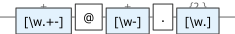

See the pattern
Real output from regexmate graph — not a mockup.

\d{4}-(0[1-9]|1[0-2])-(0[1-9]|[12]\d|3[01])
[\w.+-]+@[\w-]+\.[\w.]{2,}RegexMate validates, matches, explains and draws regexes — with a versioned JSON contract, explicit exit codes and standalone binaries. Built for coding agents, and for the humans who review their work.
raco pkg install https://github.com/turinglambdaai/regexmate
One versioned JSON contract (regexmate/v1) across every command, absolute [start, end) spans, 1-based capture groups and exit codes that never lie. Drop it into any tool loop — no screenscraping, no guessing.
explain walks the parsed AST and narrates every part in English or 中文 — quantifiers, groups, lookarounds, unicode classes — so a pattern you inherited explains itself.
graph renders any pattern to a clean SVG railroad diagram — for specs, pull requests and documentation. The diagrams on this page are generated by the tool itself.
Everything works in human mode and JSON mode, in English and 中文.
$ regexmate match '\d+' 'abc 123 def 456'
Found 2 match(es):
at 4-7: "123"
at 12-15: "456"
$ regexmate explain '(?:\d{2,4}|[a-z]+)(?=x)'
Pattern: (?:\d{2,4}|[a-z]+)(?=x)
Components:
1. [group] (?:\d{2,4}|[a-z]+)
← Non-capturing group (?:...): Digit (\d) × {2,4} | Character class: [a-z] × +
2. [lookaround] (?=x)
← Positive lookahead (?=...): Literal: x
$ regexmate replace '(\w+)@(\w+)' '\1 AT \2' 'a@b'
Replaced 1 occurrence(s).
Result: a AT b
$ regexmate graph 'ab(c|d)*' -o diagram.svg
SVG saved to: diagram.svgReal output from regexmate graph — not a mockup.
\d{4}-(0[1-9]|1[0-2])-(0[1-9]|[12]\d|3[01])
[\w.+-]+@[\w-]+\.[\w.]{2,}{
"schema": "regexmate/v1",
"command": "match",
"ok": true,
"pattern": "(\\w+)@(\\w+)",
"text": "mail a@b",
"count": 1,
"matches": [{
"value": "a@b",
"start": 5, "end": 8,
"groups": [
{"index": 1, "name": null,
"value": "a", "start": 5, "end": 6},
{"index": 2, "name": null,
"value": "b", "start": 7, "end": 8}
]
}]
}Spans are absolute and [start, end). Absent groups are null — never missing keys.
0 | ok — match found / pattern valid / replacement done |
1 | invalid regular expression |
2 | usage error (bad flag, unknown command) |
3 | valid pattern, zero matches / zero replacements |
# stdin in, JSON out — chain it anywhere
cat access.log | regexmate match '^(\d+\.\d+\.\d+\.\d+)' - --json
# exit code 3 = valid regex, no match
regexmate match 'ERROR' "$log" --json || code=$?Text comes from an argument or stdin ('-'). NO_COLOR and REGEXMATE_LANG are honored; --lang switches output language.
Grab a release from GitHub — a single executable plus bundled runtime libraries. No Racket installation needed.
ReleasesAlready running Racket? Install straight from the repository:
raco pkg install https://github.com/turinglambdaai/regexmateClone, compile and produce your own binary in three commands (Racket 9.x):
git clone https://github.com/turinglambdaai/regexmate
cd regexmate && raco make main.rkt
racket run-tests.rkt && raco exe -o regexmate main.rkt